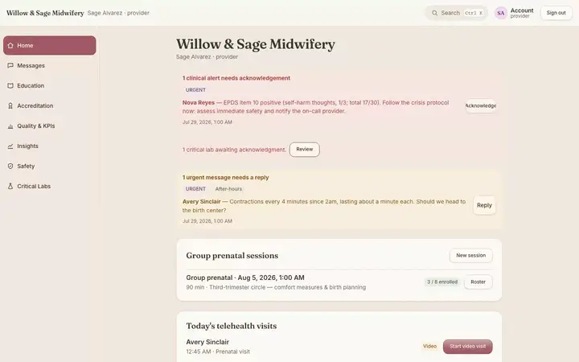
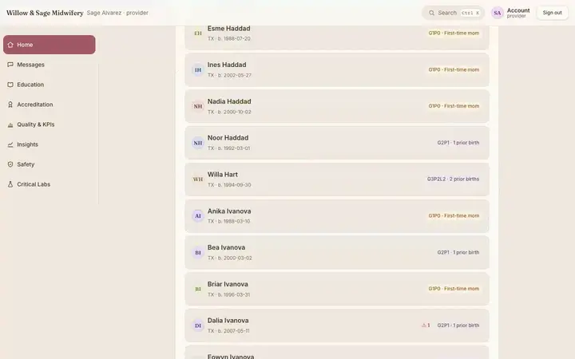
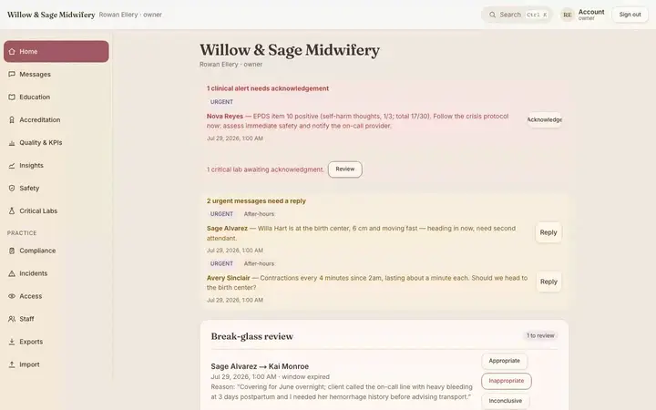
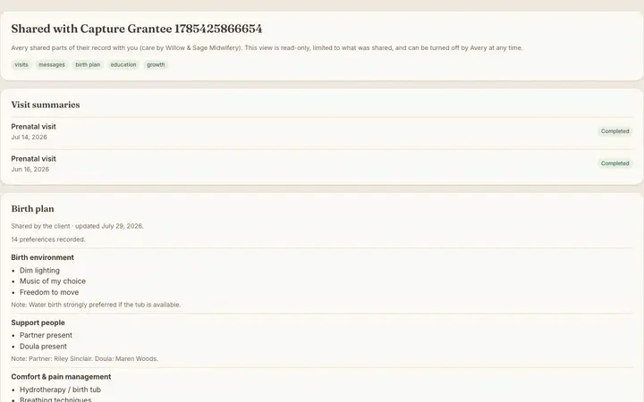
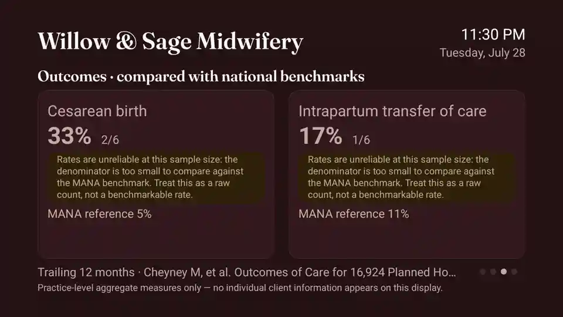
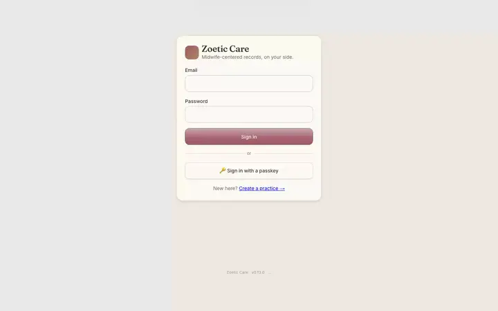
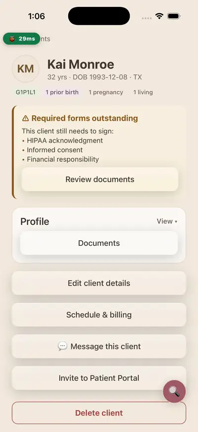
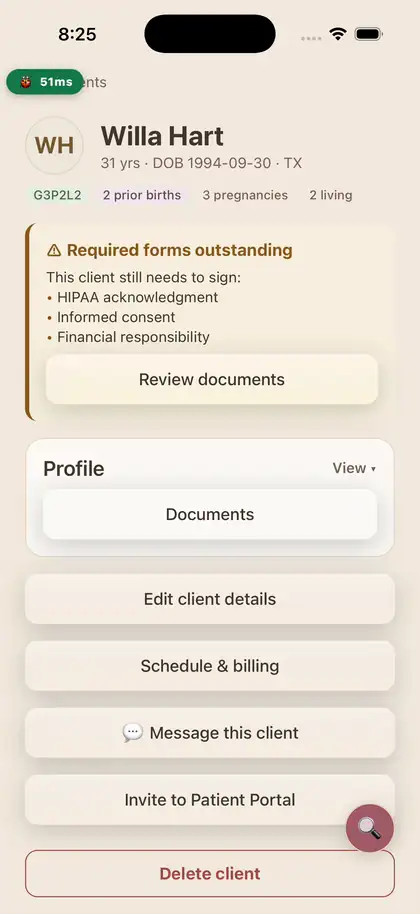

Midwife-centered EHR
The chart that works the way midwives do.
Zoetic Care is a calm, secure electronic health record and practice platform for Midwifery Professionals — prenatal to postpartum charting, e-signed consent, scheduling and self-pay billing — on the web and in your pocket on iOS and Android.
📱 iOS & Android · 💻 Web · 🔒 Offline-first · FHIR-native
Built for the whole course of care
One record, one login, from the first prenatal visit through postpartum.
Stage-aware charting
Prenatal, labor, and postpartum flows with gestational-age dating, an OB flow sheet, and append-only signed notes.
Consent & disclosure
Informed disclosure, refusal, and consent with typed e-signatures that gate charting — immutable and hash-verified.
Risk at a glance
GTPAL history and risk flags — prior C-section/VBAC, high-risk conditions — surfaced right on the client profile.
Works offline
Chart in a birth center or at a home birth with no signal; entries sync automatically the moment you reconnect.
Scheduling & billing
Appointments, reminders, and self-pay superbills — the business side of the practice, built in.
Secure by design
Mandatory MFA, per-practice data isolation, and a tamper-evident audit trail on every action.
Web, iPhone & Android
The same record on every device — a full native app on iOS and Android, not a shrunken web page. Charting, messaging and the client list work the same wherever you open them.
Waiting-room displays
Pair a TV in a few seconds with an on-screen code, then show practice hours, your own slideshow, and outcome statistics — with no client-identifying information on screen.
Outcomes you can defend
Cesarean, transfer and spontaneous-birth rates computed from your own charts and shown beside MANA reference figures, with the caveats stated rather than buried.
Client portal
Clients read their own visit summaries, sign forms and message the practice. Share a single pregnancy with a partner or a consulting provider through a scoped, expiring link.
Telehealth & messaging
Secure threads with your clients, urgent messages surfaced on the dashboard, and video visits that start from the chart.
Spanish, in the clinical UI
Not a marketing page translation — the charting surfaces themselves, so a Spanish-speaking client reads their own record in their own language.
A look inside
The client list, a full pregnancy profile with the OB flow sheet, and your workspace — your way.










Want to see it with your practice?
We’re onboarding a small group of Midwifery Professionals. Reach out and we’ll set up a walkthrough.
hello@zoetic.care